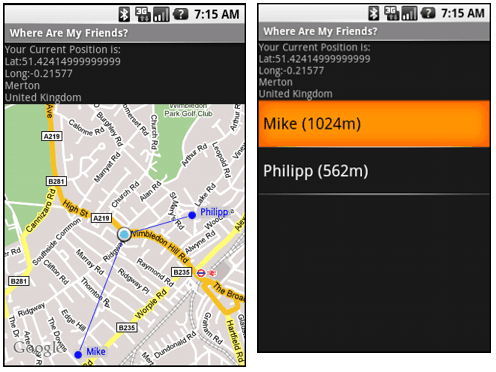

Reto Meier is a software engineer in London. He blogs about technology, programming & Google, and is author of the book Professional Android Application Development.
Progress is wonderful, but it doesn't do much for the relevancy of tutorials using old SDKs. Each Android SDK release included a bunch of breaking changes, and one or two conspicuous retractions, before Android version 1.0 was released in September.
As a result, the original "Where Are My Friends" tutorial is now woefully out of date. Enter this new and improved post – fully Android v1r1 compatible – and now available as an open source project. As a 'live' project the source may change over time, but you can always download the original source used in this tutorial.
After getting the addresses for everyone in your contact list, WamF places them all on a map, drawing lines that connect you to them. It also includes a couple of extra features that weren't in the original tutorial so by the time we're done we'll have touched on maps, overlays, Location-Based Services, using native Content Providers, Adapters, the geocoder, and menus.

Getting started is pretty well-worn ground. Pull down the latest Android SDK and JDK (5 or newer). Download and install Eclipse for Java developers (3.2 or newer) and the ADT Eclipse plugin and you're set. There's more detail at StackOverflow, on the Android code site, and the Android support forums.
If you're new to Android be sure to check out the excellent online documentation or the sample projects included in the SDK.
The app is driven by the location of the people in your contacts list, we'll reverse geocode each person's home address and use that as their location. I'm going to encapsulate this into a static method so it can easily be called from both Activities in my application.
public static HashMap<String, Location> GetFriendLocations(Context context) {Get the ContentResolver from the application context and use it to execute a query against the Content Provider that contains your contact list.
cursor = context.getContentResolver().query(People.CONTENT_URI, null, null, null, null);
The returned Cursor is a managed way of controlling the current position (row) in the query's result set. You can use a set of getter methods to extract values for each column in the current row. The People class offers convenience properties for each of the column indexes.
int nameIdx = cursor.getColumnIndexOrThrow(People.NAME); int personID = cursor.getColumnIndexOrThrow(People._ID);
Iterate over the result set, extracting the name and address of each contact.
HashMap<String, Location> result = new HashMap<String, Location>();
if (cursor.moveToFirst())
do {
// Extract the name.
String name = cursor.getString(nameIdx);
String id = cursor.getString(personID);
// Extract the address.
String where = Contacts.ContactMethods.PERSON_ID + " == " + id
+ " AND "
+ Contacts.ContactMethods.KIND + " == "
+ Contacts.KIND_POSTAL;The addresses for contacts are stored in a separate table, so you'll need to use another cursor to extract the postal address we'll reverse-geocode to get a physical location.
addressCursor = context.getContentResolver().query(Contacts.ContactMethods.CONTENT_URI,
null, where, null, null);
// Get the postal address from the cursor
int postalAddress = addressCursor.getColumnIndexOrThrow(Contacts.ContactMethodsColumns.DATA);
String address = "";
if (addressCursor.moveToFirst())
address = addressCursor.getString(postalAddress);
addressCursor.close();Use the Geocoder to turn each address into a physical location with the getFromLocationName method. Store the contact name and a Location object with the reverse geocoded location in the result hash.
// Reverse geocode the postal address to get a location.
if (address != null) {
Geocoder geocoder = new Geocoder(context, Locale.getDefault());
try {
List<Address> addressResult = geocoder.getFromLocationName(address, 1);
if (!addressResult.isEmpty()) {
Address resultAddress = addressResult.get(0);
friendLocation.setLatitude(resultAddress.getLatitude());
friendLocation.setLongitude(resultAddress.getLongitude());
}
} catch (IOException e) {
Log.d("Contact Location Lookup Failed", e.getMessage());
}
}
result.put(name, friendLocation);
} while(cursor.moveToNext());
cursor.close();
return result;
}Before Android lets you casually flip through the user's contact list you need to get permission. Permissions are a security mechanism that lets users decide what risks they're willing to take with a new app – kind off like UAC but without the continuous, repetitive, soul-destroying inevitability of UAC.
You'll also need permission to use the location-based services we're about to cover, so add them all to your application manifest (AndroidManifest.xml) now.
<uses-permission android:name="android.permission.INTERNET"/> <uses-permission android:name="android.permission.ACCESS_FINE_LOCATION"/> <uses-permission android:name="android.permission.READ_CONTACTS"/>
That covers the hard part. Now find your current location and plot each contact onto a map.
We need to find and track the current location in map and list Activities. I still think the location-based services (GPS etc) are one of the most exciting aspects of developing for the latest generation of devices.
Location-Based Services (LBS) are handled using the LocationManager Service.
locationManager = (LocationManager)getSystemService(Context.LOCATION_SERVICE);
LBS is a generic term for any mechanism that can be used to figure out where you are – including GPS, cell, or IP address techniques. Some are more accurate than others, generally at a cost to your already scant battery life.
You can use the getBetProvider method to define minimum
requirements and let Android pick the best technique available. The key
criteria is the accuracy; using the G1, this is going to decide between
GPS and Network location.
Criteria criteria = new Criteria(); criteria.setAccuracy(Criteria.ACCURACY_FINE); criteria.setAltitudeRequired(false); criteria.setBearingRequired(false); criteria.setCostAllowed(true); criteria.setPowerRequirement(Criteria.POWER_LOW); String provider = locationManager.getBestProvider(criteria, true);
Once you've got a provider call getLastKnownLocation, passing in the provider name to use, to get the last location fix.
Location location = locationManager.getLastKnownLocation(provider);
To track our location as we move we need to register a Location Listener specifying a minimum distance and time to throttle updates.
locationManager.requestLocationUpdates(provider,
60000, // 1min
100, // 1km
locationListener);Override the onLocationChanged handler within your registered Location Listener to call the method that will update the GUI based on your new location – either updating the map or recalculating the distances shown in the list.
private final LocationListener locationListener = new LocationListener() {
public void onLocationChanged(Location location) {
updateWithNewLocation(location);
}
public void onProviderDisabled(String provider){}
public void onProviderEnabled(String provider) {}
public void onStatusChanged(String provider, int status, Bundle extras) {}
};G1 battery life is dire enough as it is, don't run down the battery when the GUIs not visible. It's good practice to unregister listeners in an Activity's onStop method, only hooking them back up during onStart.
With your location found, as well as your contacts, it's time to put together a GUI.
The layout is pretty simple (and quite similar to the worked "notepad" example on the Android code site). What you're after is an Activity (Form) that contains a ListView (List control).
<?xml version="1.0" encoding="utf-8"?>
<LinearLayout xmlns:android="http://schemas.android.com/apk/res/android"
android:orientation="vertical"
android:layout_width="fill_parent"
android:layout_height="fill_parent">
<TextView android:id="@+id/myLocationText"
android:layout_width="fill_parent"
android:layout_height="wrap_content"
/>
<ListView android:id="@+id/myListView"
android:layout_width="fill_parent"
android:layout_height="fill_parent"
/>
</LinearLayout>In the Activity's onCreate handler, Bind the ListView to an ArrayList of Strings (where each string is the name of, and distance from, a contact) using an ArrayAdapter.
ListView lv = (ListView)findViewById(R.id.myListView); aa = new ArrayAdapter<String>(getApplicationContext(), android.R.layout.simple_list_item_1, friendDistanceList); lv.setAdapter(aa);
Populate the friendDistanceList ArrayList using the hash of contact locations and your current location.
private void refreshListView() {
friendDistanceList.clear();
if (friendLocations.size() > 0) {
Iterator<String> e = friendLocations.keySet().iterator();
do {
String name = e.next();
Location location = friendLocations.get(name);
// Calculate the distance from your current location.
int distance = (int)currentLocation.distanceTo(location);
String str = name + " (" + String.valueOf(distance) + "m)";
friendDistanceList.add(str);
} while (e.hasNext());
}
}Update the updateWithNewLocation method called by the Location Listener to update the currentLocation. You can also update the TextView at the top of the GUI with your current address by geocoding your location.
private void updateWithNewLocation(Location location) {
// Update your current location
currentLocation = location;
// Refresh the ArrayList of contacts
if (location != null)
refreshListView();
// Geocode your current location to find an address.
String latLongString = "";
String addressString = "No address found";
if (location != null) {
double lat = location.getLatitude();
double lng = location.getLongitude();
latLongString = "Lat:" + lat + "\nLong:" + lng;
Geocoder gc = new Geocoder(this, Locale.getDefault());
try {
List<Address> addresses = gc.getFromLocation(lat, lng, 1);
StringBuilder sb = new StringBuilder();
if (addresses.size() > 0) {
Address address = addresses.get(0);
sb.append(address.getLocality()).append("\n");
sb.append(address.getCountryName());
}
addressString = sb.toString();
} catch (IOException e) {}
} else {
latLongString = "No location found";
}
// Update the TextView to show your current address.
TextView myLocationText = (TextView)findViewById(R.id.myLocationText);
myLocationText.setText("Your Current Position is:\n" + latLongString + "\n" + addressString);
}You only need to update the hash when the application is started, or if the user expressly requests a refresh.
The MapView can be used to display exactly where you and
your friends are in relation to each other. Draw labeled markers at
each contact's position and draw a line between them and you.
To use the map libraries you need to import them into your application using a tag in the manifest.
<uses-library android:name="com.google.android.maps"/>
MapViews can only be displayed within a MapActivity derived Activity. Your new Activity will need to implement isRouteDisplayed which should return true only if you will be displaying directions on your map. We aren't so return false.
public class WhereAreMyFriendsMap extends MapActivity {
@Override
protected boolean isRouteDisplayed() {
return false;
}
}As with all Activities, you need to add it to the application Manifest before it can be used.
To add the MapView, create a new layout resource file
(you can make a copy of the layout used for the list Activity – just
switch out the ListView for a MapView).
<com.google.android.maps.MapView android:id="@+id/myMapView" android:layout_width="fill_parent" android:layout_height="fill_parent" android:enabled="true" android:clickable="true" android:apiKey="MAPKEYGOESHERE">
You'll need to get your own map API key from the Android Map API key site. The site will ask you for your MD5 key, which you can get from the Android key store using keytool.exe from the JDK. The location of your Android keystore depends on your operating system, for Vista you'll find it at C:\Users\<user>\AppData\Local\Android\debug.keystore. This forum post has a pretty good explanation that describes what you need to do.
Once you've got an Android map API key, put that value into the layout.
Chances are you'll want to add the Zoom Controls that let you zoom in / out of the map. There's a good explanation at StackOverflow that explains how to do so.
Override the onCreate method of the Activity to inflate the new layout, get a reference to the MapView and configure the map settings.
@Override
public void onCreate(Bundle icicle) {
super.onCreate(icicle);
setContentView(R.layout.map_layout);
MapView myMapView = (MapView)findViewById(R.id.myMapView);
mapController = myMapView.getController();
[ ... Configure the map settings ... ]
}Overlays let you add graphical layers over a MapView. You can place as many overlays over the top of the map as you like, each presenting a different level of detail.
We'll add two Overlays – one to show your current position, and a second to show your friends locations.
Start by getting the overlay list from the MapView using getOverlays.
List<Overlay> overlays = myMapView.getOverlays();
Android has a native Overlay – MyLocationOverlay – that shows your current position. Within onCreate, create a new instance of the MyLocationOverlay and add it to the map's Overlay list.
MyLocationOverlay myLocationOverlay = new MyLocationOverlay(this, myMapView); overlays.add(myLocationOverlay); myLocationOverlay.enableMyLocation();
You'll need to create a custom Overlay for your friend's locations.
An Overlay is a transparent Canvas onto which you can draw whatever you want by overriding the onDraw handler. You'll need to pass the application context into the Overlay's constructor, and provide a property to set your current location to support the line drawing.
public class FriendLocationOverlay extends Overlay {
private Context context;
private HashMap<String, Location> friendLocations;
private Location location;
private GeoPoint locationPoint;
public Location getLocation() {
return location;
}
public void setLocation(Location location) {
this.location = location;
Double latitude = location.getLatitude()*1E6;
Double longitude = location.getLongitude()*1E6;
locationPoint = new GeoPoint(latitude.intValue(),longitude.intValue());
}
public FriendLocationOverlay(Context _context) {
super();
context = _context;
}
@Override
public void draw(Canvas canvas, MapView mapView, boolean shadow) {
if (shadow == false) {
[ ... draw stuff here ... ]
}
super.draw(canvas, mapView, shadow);
}
@Override
public boolean onTap(GeoPoint point, MapView mapView) {
return false;
}
}You can draw on the Overlay canvas the same as you would any other Android canvas.
To convert between latitude/longitude and screen coordinates, you need to get the maps current projection, accessed using getProjection.
Projection projection = mapView.getProjection();
Before using the Projection's toPixels method, you need to convert the lat/long tuple into a GeoPoint that contains the location in microdegrees.
I'm going to iterate over the friend list as before – but this time I'll draw a small circle over each friend location (using drawOval) with their name alongside (drawText) and a line connecting them to my current location (drawLine). I'll use the Location class's distanceTo method to filter out anyone more than 10km away.
String name = e.next();
Location location = friendLocations.get(name);
Double latitude = location.getLatitude()*1E6;
Double longitude = location.getLongitude()*1E6;
GeoPoint geopoint = new GeoPoint(latitude.intValue(),longitude.intValue());
float dist = location.distanceTo(getLocation());
if (dist < 10000) {
Point point = new Point();
projection.toPixels(geopoint, point);
canvas.drawLine(lPoint.x, lPoint.y, point.x, point.y, paint);
int markerRadius = 5;
RectF oval = new RectF(point.x-markerRadius,
point.y-markerRadius,
point.x+markerRadius,
point.y+markerRadius);
canvas.drawOval(oval, paint);
float textWidth = paint.measureText(name);
float textHeight = paint.getTextSize();
RectF textRect = new RectF(point.x+markerRadius, point.y-textHeight,
point.x+markerRadius+8+textWidth, point.y+4);
canvas.drawText(name, point.x+markerRadius+4, point.y, paint);
}Create a new instance of this Overlay class and add it to the MapView's Overlay list.
positionOverlay = new FriendLocationOverlay(getApplicationContext()); overlays.add(positionOverlay);
The MyLoctionOverlay class will take care of moving the 'where am I' marker, but you still need to update the friend Overlay to ensure the lines go to the right place.
The updateWithNewLocation method in the map Activity
should be similar to the one in the List screen, except it will also
re-center the map and pass your new location in to the friends Overlay
instance.
private void updateWithNewLocation(Location location) {
positionOverlay.setLocation(location);
myMapView.invalidate();
// Recenter the map.
Double geoLat = location.getLatitude()*1E6;
Double geoLng = location.getLongitude()*1E6;
GeoPoint point = new GeoPoint(geoLat.intValue(), geoLng.intValue());
mapController.animateTo(point);
[ ... Update the TextView as in the ListView ... ]
}To finish off, add menus to each Activity to refresh the friend's
Location hash and switch between the map and list screens by overriding
the onCreateOptionsMenu and onOptionsItemSelected handlers for both Activities.
public boolean onCreateOptionsMenu(Menu menu) {
super.onCreateOptionsMenu(menu);
[ ... add menu items ... ]
return true;
}
public boolean onOptionsItemSelected(MenuItem item) {
super.onOptionsItemSelected(item);
[ ... react to different menu selections ... ]
return false;
}Within onCreateOptionsMenu, add the two menu items.
menu.add(0, MENU_ITEM_MAP, Menu.NONE, R.string.menu_item_map); menu.add(0, MENU_ITEM_REFRESH, Menu.NONE, R.string.menu_item_refresh);
The onOptionsItemSelected handler is triggered when one
of the menu items is selected. Create a switch statement to determine
which item was selected and either refresh the friend hash or display
the other Activity, as appropriate.
switch (item.getItemId()) {
case (MENU_ITEM_MAP):
startActivity(new Intent(this, WhereAreMyFriendsMap.class));
return true;
case (MENU_ITEM_REFRESH) :
refreshFriendLocations();
refreshListView();
return true;
}Android is a mobile developers dream – and in these early days, hobbiest and small development houses have the opportunity to innovate in an uncrowded sandbox.
This tutorial is more a 'proof of concept' than 'production ready'. Running through the 400 contacts on my G1 freezes the app pretty well, so at the very least that processing needs to be moved to a background thread. At the moment it's really only suitable for running on the emulator or with a very limited number of contacts.
You can download the full source this tutorial was based on, or check out the latest version in this Open Source project. When it's ready for primetime I'll add it to the Android Market.
For more Android programming help, check out my book Professional Android Application Development. You can download Chapter 7 as a free PDF. It covers Location-Based Services, Maps, and the Geocoder are covered in some depth. If you're an Android skeptic or n00b you might also be interested in downloading Chapter 1 [PDF] that intros Android and mobile development.
You can find more resources, including all the code-snippets and sample code projects in the book from my Android Resource Portal.
>> More posts
Advertisement
This site unofficially covers Google™ and more with some rights reserved. You can subscribe to the feed, email your tips and join our forum!